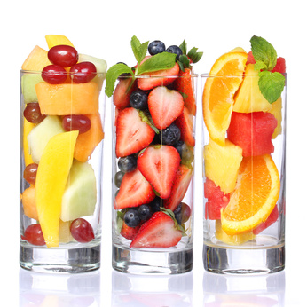

Ein leckerer Smoothie für jeden Tag
Herzlich Willkommen. Auf dieser Webseite findest du 365 Smoothie-Rezepte zum Nachmachen. Naja, soviele sind es noch nicht. Aber ich arbeite dran!
Smoothies sind gesund, lecker und super erfrischend. Du kannst sie schnell und einfach selbermachen. Als Einsteiger oder als Gelegenheits-Smoothie Genießer benötigst du keinen ultra teuren Hochleistungsmixer. Alles was du brauchst, um tolle Smoothies zu mixen, ist ein normaler Küchenmixer, oder ein guter Stabmixer.
Smoothies sind auch voll im Trend. Du kannst unzählige Variationen davon im Handumdrehen zaubern. Ob als Frühstückssmoothie, zur Erfrischung an einem heißen Sommertag, oder einfach für zwischendurch. Mit wenigen Handgriffen und dem passenden Smoothie-Rezept machst du in Windeseile deinen neuen Lieblings-Smoothie.
Ich zeige dir auf dieser Seite, wie es geht.
1 Smoothie für jeden Tag
… und das ein ganzes Jahr lang. Macht also ganze 365 Smoothies.
Dies ist mein Plan für diese Webseite, den es umzusetzen gilt. Ich probiere jedes meiner Smoothie-Rezepte händisch aus und stelle das Rezept erst ein, wenn ich es als tauglich für die Allgemeinheit empfinde. 🙂
Ich benötige 365 Smoothie Rezepte, denn kein Smoothie soll zweimal vorkommen. 😮 Auf den ersten Blick ne ganze Menge, aber machbar. Auf den zweiten Blick klingt das für mich nach einer echten Herausforderung! Ich habe zwar schon ein, zwei Smoothies getrunken, aber die kamen aus dem Kühlregal irgendeines Supermarktes. Ich habe also eine grobe Idee, was einen guten Smoothie ausmacht – vorausgesetzt, man kann die Fertig-Getränke als gut ansehen, keine Ahnung -, aber ansonsten keinen wirklichen Plan vom Thema.
Hier geht’s direkt zu den Rezepten
Ich besorgte mir also als erstes zwei Bücher, eines über „Power-Smoothies„, das andere über die mysteriösen grünen Smoothies. Viele spannende Rezepte, von denen ich manche als recht hm… merkwürdig empfinde! Aber das ist ja nur meine ganz persönliche Meinung. Nun denn… ich beschloss, jedes Rezept für meine 365 Smoothies selbst zu erfinden, die Bücher nur einmal für die Basics durchzuschauen und dann wegzulegen, und meine eigene Kreativität spielen zu lassen. Soviel dazu..
Was an Smoothie Rezepten bei meinen Experimenten herauskommt, stelle ich live auf diesem Blog ein!
… Das ergibt dann eine Rezeptedatenbank von mindestens 365 Smoothie Rezepten! Ich hoffe, ihr habt genauso viel Spass beim Mixen und Erfinden von Smoothie Rezepten, wie ich! Ich freue mich sehr auf eure Kommentare, denn ich werde sicher einiges an Unterstützung brauchen, um meine Herausforderung komplett zu absolvieren. Also, wenn ihr Ideen und Anregungen habt, dann kommentiert bitte fleißig!
Viel Spass beim Mit-mixen, Ausprobieren und Bewerten aller Smoothie Rezepte! 🙂
Smoothie-Rezepte nach Zutaten
Nachfolgend findest du alle meine Smoothie-Rezepte sortiert nach den Zutaten. Wo du keinen Link findest, habe ich noch nicht so viele Rezepte eingestellt, dass sich das lohnt. Die Zutaten werden aber dennoch in einigen Smoothies verwendet. Wenn es mehr werden, ergänze ich die Links und Zutaten entsprechend.
Chiasamen
Cranberry
Eisbergsalat
Erdbeere
Feldsalat
Gojibeeren
Gurke
Heidelbeere
Himbeere
Holunder
Honig
Honigmelone
Joghurt
Johannisbeere
Kiwi
Kokosnuss
Kopfsalat
Limettensaft
Löwenzahn
Mandelmus
Mandeln
Mango
Maracuja
Orange
Orangensaft
Passionsfrucht
Pfefferminze
Romana Salat
TK Beeren
Wassermelone
Zimt
Zitronenmelisse
Zitronensaft
Ich verwende für meine Smoothies stets frische Zutaten, soweit zu bekommen. Ab und zu nutze ich aber auch Tiefkühlware, wie Beerenmischungen. Sie sind in sehr guter Qualität zu bekommen, und mit ihrer Hilfe kann ich auch außerhalb der Saison tolle Smoothies zaubern. Wenn ich frisches Obst in guter Qualität bekomme, dann friere ich inzwischen immer auch Portionen ein. Wie das am besten geht, erkläre ich dir auf dieser Seite hier.
Wenn du Inspiration für die perfekten Zutaten deines Lieblings-Smoothies brauchst, dann schau dir doch meine Smoothie Zutatenliste einmal an. Hier sammle ich alle Obstsorten, Gemüse, Kräuter und Superfoods, die ich bereits ausprobiert habe. Diese Liste habe ich beim Einkaufen immer mit dabei, so dass ich – je nach Lust und Laune – meine Smoothie-Zutaten einkaufen kann.
Was sind Smoothies eigentlich?
Unter einem Smoothie versteht man ein Getränk, das nicht nur Fruchtsaft enthält, sondern ganze Früchte, Obst und Gemüse. Es handelt sich also um ein „Ganzfruchtgetränk„. Obst, Gemüse, Nüsse, Kräuter und andere Zutaten werden meist mehr oder weniger mit allem Drum und Dran püriert und dann als Getränk serviert. Einsteiger nutzen für ihre Smoothies meist eher süße Früchte, Fortgeschrittene verwenden auch Gemüsesorten, die man sonst nur als Beilage zum Mittagessen kennt: Brokkoli, Grünkohl, aber auch Sauerampfer, Sellerie, Löwenzahn lassen sich super in grünen Smoothies oder in Detox-Smoothie Rezepten verwenden.
Das Gute daran: Viele gesunde Inhaltsstoffe befinden sich in den Schalen von Früchten. Wer keine Schalen essen mag, schneidet sie gern ab. Im Smoothie kriegst du von solchen Obstteilen jedoch nichts mehr viel mit. Denn Äpfel, Gurke und andere Schalenträger werden einfach komplett püriert. Deine Kids mögen kein Gemüse? Kein Problem: Gemüsesorten zusammen mit leckerem Obst zu einem cremigen Smoothie mixen, und schon hast du deine Lieben überzeugt! 🙂
Auf dieser Seite stelle ich dir eine große Auswahl an Rezepten vor, von denen sicher auch einige deinen Geschmack treffen.
Ich wünsche dir ganz viel Spaß beim Nachmachen und Experimentieren! Kommentiere gern unter die Rezepte, wenn du tolle Verbesserungsideen hast!
Superfood Smoothies
Nun gibt es inzwischen auch die ersten Rezepte für Superfood-Smoothies. Die Kategorie wird weiter ergänzt, aber schau doch gern schon einmal vorbei. Wenn du mehr über Superfoods erfahren möchtest, dann habe ich hier für dich meine Top-Favoriten zusammengestellt.
Kommentare
Kristina April 17, 2014 um 1:12 pm
Hallo Rene,
ich finde die Website sieht jetzt viel frischer aus und passt zu deinen Smoothies!
Weiterhin viel Spaß im Erfinden neuer Rezepte. Ich werde die Smoothies mit Erdbeeren probieren.
Viele Grüße
Kristina
Rene April 17, 2014 um 6:42 pm
Hi Kristina,
vielen Dank nochmal für deine hilfreichen Tipps zum Layout. Ich meine auch, dass die Seite jetzt deutlich besser aussieht, wo sie heller ist. Ich werde die Tage mal wieder auf deiner Seite vorbeischauen.
Viele Grüße und schöne Ostertage,
René
Jenny Juni 3, 2014 um 11:07 am
Ich finde die Seite auch sehr hübsch, aber das Logo geht noch ziemlich unter. Gerade durch das schwarz 🙂 Irgendwie müsste das noch mehr herausstechen.
Stefan.Knoblich Februar 23, 2016 um 8:12 am
Hi Leute,
ich möchte frühs ein gesundes Frühstück zu mir nehmen.
Habt ihr schon Erfahrungen mit Smoothie und Müsli gemacht?
Findet ihr diese Mischung lecker und gesund?
Bitte um Unterstützung 🙂
Gruß
Stefan
Rene März 1, 2016 um 7:17 pm
Hi Stefan,
ja, solche Smoothie Bowls entwickeln sich aktuell sogar zum Trend: Einen Smoothie besonders dick mixen, in eine Müslischale füllen und oben drauf frisches Obst, Müsli oder Nüsse geben. Ein super Frühstück! Hierzu folgen auch noch Rezepte und Ideen zum Nachmachen.
Viele Grüße, René
Tine März 1, 2016 um 7:20 pm
Ich mixe mir morgens gern Mango mit TK-Erdbeeren und esse diesen smothie mit Haferflocken
Liebe Grüße Tine
Jurgen November 18, 2016 um 6:42 pm
Ich finde in deinem Blog immer was neues für mich. Ich möchte Dir dafür bedanken!
Rene August 1, 2017 um 8:20 pm
Ich biete euch auf meiner Webseite jede Menge Kalorientabellen für alle Arten an Smoothiezutaten. Schau doch einfach mal vorbei unter lebensmittel-naehrstoffe.de.